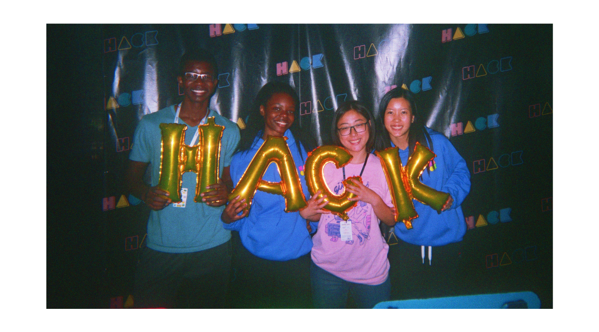

An app that identifies wheelchair accessible entrances in buildings and helps users naviagate to the location in the easiest possible way.
Frontend/Backend Developer
Joseph Ntaimo, Creative/Programming Lead
Michelle Wen, Backend Developer
Vanessa Sun, Graphic Designer
September 2019
HandyMap is an Android application created by Rachel Ombok, Michelle Wen, Joseph Ntaimo and Vanessa Sun at HackMIT 2019. It is an app that identifies wheelchair accessible entrances in buildings and helps users naviagate to the location in the easiest possible way. The project ranked in the Top 10 and won Best Assistive Tech project at the event against 200 other teams.
The project is inspired by the sister of one our creators, Joseph Ntaimo. Joseph often needs to help locate wheelchair accessible entrances to accommodate her, but they can be hard to find when buildings have multiple entrances. Therefore, we created our app as an innovative piece of assistive tech to improve accessibility across the M.I.T campus.
We started off using MIT’s Accessible Routes interactive map to see where the wheelchair friendly entrances were located at MIT. We then inspected the JavaScript code running behind the map to find the latitude and longitude coordinates for each of the wheelchair locations.
We then created a Python script that filtered out the latitude and longitude values, ignoring the other syntax from the coordinate data, and stored the values in separate text files.
We tested whether our method would work in Python first, because it is the language we all are most familiar with, by using string concatenation to add the proper Java syntax to the latitude and longitude points. Then we printed all of the points to the terminal and imported them into Android Studio.
After being certain that the method would work, we uploaded these files into the raw folder in Android Studio and wrote code in Java that would iterate through both of the latitude/longitude lists simultaneously and plot them onto the map.
The next step was learning how to change the color and image associated with each marker, which was very time intensive, but led us to having our custom logo for each of the markers.
Separately, we designed elements of the app in Adobe Illustrator and imported logos and button designs into Android Studio. Then, through trial and error (and YouTube videos), we figured out how to make buttons link to different pages, so we could have both a FAQ page and the map. We split the work between frontend and backend, but always helped each other along the way.
Then we combined both of the apps together atop of the original maps directory and ironed out the errors so that the pages would display properly. Check out our Github repository here.
We had a lot more ideas than we were able to implement. Stripping our app to basic, reasonable features was something we had to tackle in the beginning, but it kept changing as we discovered the limitations of our project throughout the 24 hours. Therefore, we had to sacrifice features that we would otherwise have loved to add.
A big difficulty for our team was combining our different elements into a cohesive project. Since our team split up the usage of Android Studio, Adobe illustrator, and programming using the Google Maps API, it was most difficult to integrate all our work together.
We were proud of how effectively we were able to split up our team’s roles based on everyone’s unique skills. In this way, we were able to be maximally productive and play to our strengths. We were also able to add Boston University accessible entrances in addition to MIT's, which proved that we could adopt this project for other schools and locations, not just MIT.
We used Android Studio for the first time to make the application. We discovered how much Google API had to offer, allowing us to make our map and include features such as instant directions to a location. This helped us realize that we should use our resources to their full capabilities. For 3 of us on the team, it was our first hackathon and we learned how to use our time efficiently in times of crunch, and how to communicate our ideas effectively and proactively as a team.
Given more time, we knew we would have added many features such as accessibility for visually impaired students to help them find entrances, alerts for issues with accessing ramps and power doors, a community rating system of entrances, using machine learning and the community feature to auto-import maps that aren't interactive, and much, much more. Most important of all, we would apply it to all colleges and even anywhere in the world. Check out our Devpost writeup!